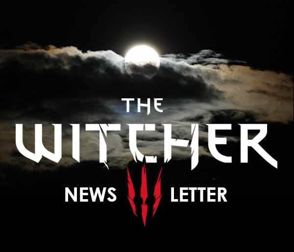
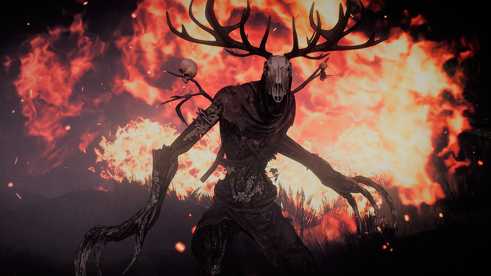
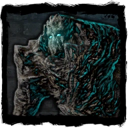
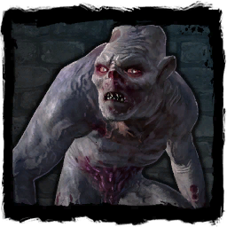
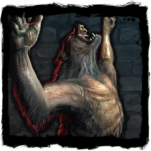

|  | |
The Beast of The Week |
|
|  | |
Leshen |
|
|
Leshens dwell in dense, primeval woods. Fiercely territorial creatures, they hunt with stealth and cunning as their only companions. They use their inborn magic to control the plants and animals within their territory — and so when stalking them, half the battle is merely getting near enough to strike. Leshens old enough to earn the appellation "ancient" wield advanced skills and tactics that make them particularly dangerous. |
|
More from the bestiary |
|  | A golem is a creature made of stone or wood, brought to life by a mage and animated with the use of magic |
| Alghouls are ghouls which had been devouring corpses for so many years that human flesh becomes irresistible and they begin to prey on the living. They are seen in crypts and on battlefields, frequently surrounded by ghouls. Simple folk do not notice the differences between these two types of scavengers - unlike witchers, who know that the alghoul is a more aggressive and challenging opponent. |  |
|  | Werewolves are lycanthropes, which means that they are shapechangers; humans transform into werewolves as a result of curses; the creatures lurk near human settlements |
Learn more |
| VISIT WEBSITE |